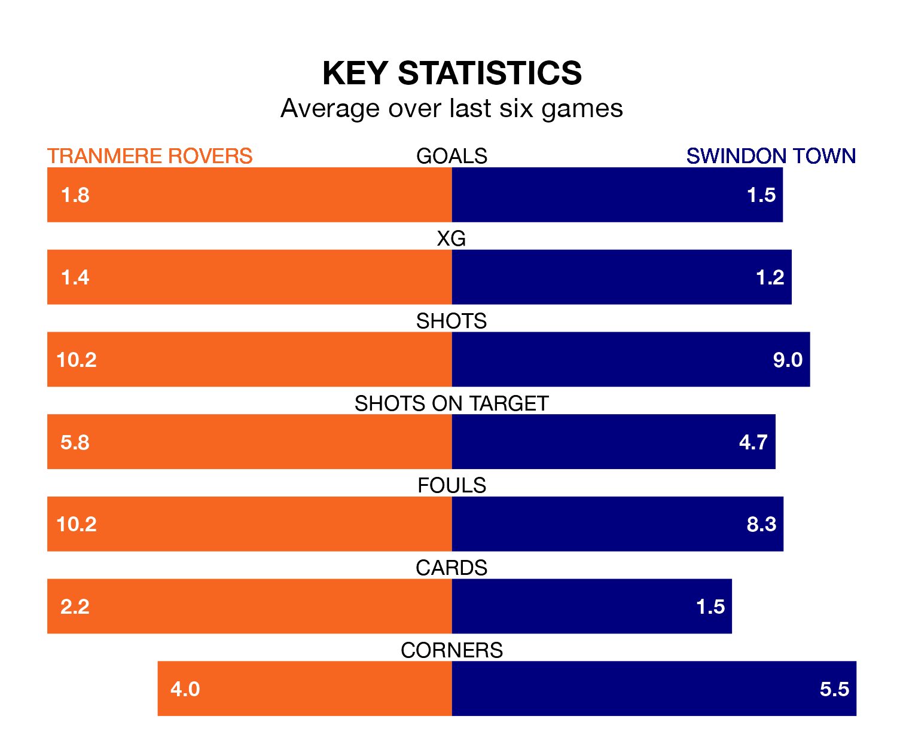

Swindon Town travel to Tranmere Rovers on Saturday in EFL League Two.
The visitors come into the game on the back of a defeat in their last match, having lost to Barrow 3-0 at home.
Tranmere also lost their last match, 1-0 against Walsall.
In Jake Young, Swindon have the league's most on-form striker so far this season. He has notched 16 goals in 21 appearances.
His goal rate of one every 100 minutes is much quicker than that of Conner Jennings, Tranmere's top scorer with a goal every 304 minutes, and a total of six goals in 21 games.
With 43 goals in 22 games so far this season, Town are scoring more than average in the league with 2.0 goals per game. But they are conceding more than average too, letting in 43 goals at a rate of 2.0 per game.
Rovers, meanwhile, are below average scorers, with 1.3 goals per game, compared to a league average of 1.5. They have conceded 1.6 goals per game.
In the last 10 years, Tranmere and Swindon have played each other on seven occasions. Tranmere won two of them, Swindon three, and they drew twice.
On average, Tranmere scored 1.3 goals and the Robins 1.1 in those matches.
Their last meeting was on April 10, when Tranmere won 1-0 at home.
The hosts are 21st in the table after 22 games, of which they have won six and drawn three, earning 21 points.
The Robins are nine places ahead of Tranmere in 12th, with eight wins and six draws putting them on 30 points.
Tranmere are in reasonable form in EFL League Two, with three wins and two draws from their last six games.
With two wins and a draw over that period, the away side's form is worse – they have taken seven points from 18, compared to Rovers' 11.
